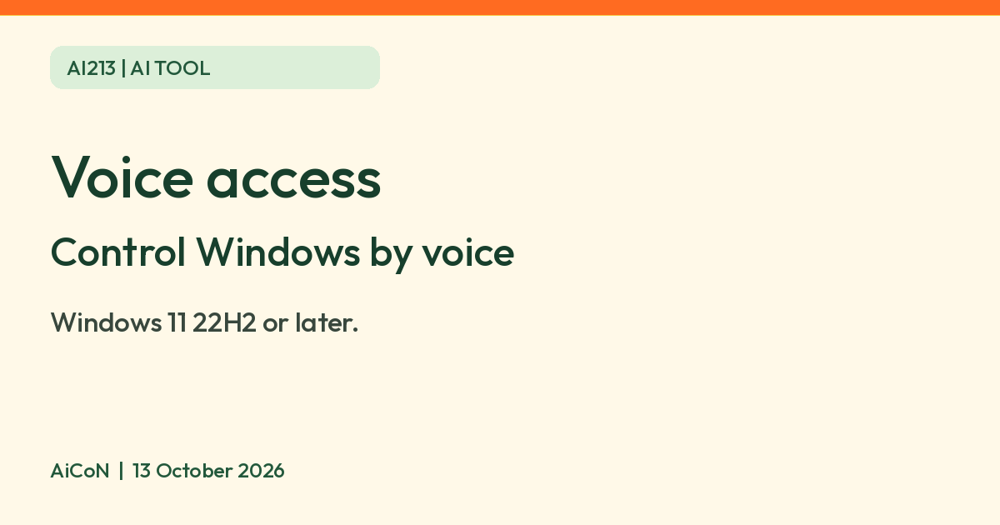

Windows 11 voice access: control your PC and dictate by voice, on-device (English India listed)
Microsoft says Windows 11 voice access lets you open apps, browse and write text using only your voice, with on-device recognition after a one-time language download.

What it is
Voice access is a feature of Windows 11. Microsoft's support page says it lets you control your PC and write text using only your voice. You can open and switch apps, browse the web, and read and write email by speaking. Microsoft says it uses "modern, on-device speech recognition". It is meant for everyone, including people with mobility disabilities.
Is it free?
Microsoft's pages describe it as a feature in Windows 11 and mention no subscription, extra charge or account for it. We did not find a sentence that says "free", so our reading is: it is part of Windows 11 at no separate charge, but Microsoft does not say that in those words.
What you need
- Windows 11, version 22H2 or later, per Microsoft.
- A microphone. Microsoft says to check that microphone access is allowed in Settings, Privacy and security, Microphone.
- An internet connection for the first set-up, to download the language files. Microsoft says that after that it works without an internet connection.
How to start
- Go to Settings, Accessibility, Speech and turn on voice access. You can also search for it in the Start menu.
- On the welcome screen, pick your language and select "Agree and continue". Windows then downloads the speech files.
- Choose your microphone. A voice access bar then appears at the top of the screen.
- You can set it to start before or after you sign in. The FAQ says voice access for PC login or new-PC setup needs Windows 11 23H2 or later.
Languages and India
- Microsoft's set-up page lists English (India) among the supported languages, along with English (US, UK, New Zealand, Canada, Australia), Spanish, German, French, Simplified and Traditional Chinese, Japanese and Italian.
- Microsoft's FAQ page lists fewer languages (English, Spanish, French and German). The two pages do not match, so check the language list inside Settings on your own PC before relying on it. We did not find Hindi or other Indian languages on the pages we read.
Privacy
- Microsoft says speech recognition happens on your device. The welcome screen links to the Microsoft Privacy Statement if you want details.
- Microsoft's feedback form says feedback you send is used to improve its products. We did not find a statement about whether your voice is stored, so on-device recognition is not a no-storage promise.
Frequently asked questions
Does it need internet?
Microsoft says initial setup needs internet to download the language files, then voice recognition works offline. Online jobs such as browsing or sending email still need their own internet connection.
Does it work on Windows 10?
Microsoft's pages say Windows 11 version 22H2 or later.
Is it the same as voice typing?
No. Microsoft's FAQ compares them: voice typing is started with the Windows key and H and is available on Windows 10 and 11. Voice access controls the whole PC.
What changed since this post?
Microsoft overview, setup and FAQ checked on 13 October 2026. Setup explicitly lists English (India), while the FAQ gives a shorter language list; the conflict remains. Core voice access needs Windows 11 22H2+, but login/new-PC setup is listed from 23H2. Initial language files need internet; recognition then works offline. No Windows PC, microphone, language-download, command, dictation or voice-storage test performed.
Sources: Microsoft: Use voice access, Microsoft: Set up voice access, Microsoft: Voice access FAQ. Checked 13 October 2026.